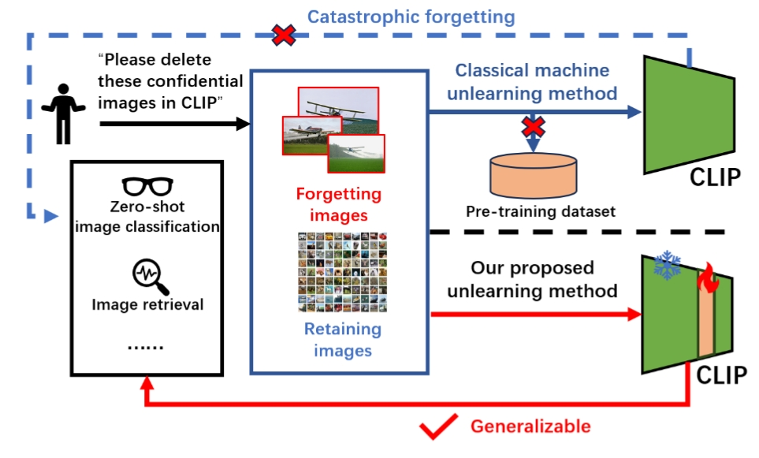
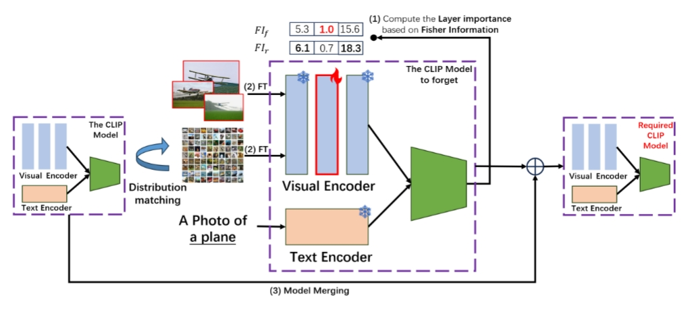

Foundation models (FMs) such as CLIP have demonstrated impressive zero-shot performance across various tasks by leveraging large-scale, unsupervised pre-training. However, they often inherit harmful or unwanted knowledge from noisy internet-sourced datasets, compromising their reliability in real-world applications. Existing model unlearning methods either rely on access to pre-trained datasets or focus on coarse-grained unlearning (e.g., entire classes), leaving a critical gap for fine-grained unlearning. In this paper, we address the challenging scenario of selectively forgetting specific portions of knowledge within a class—without access to pre-trained data—while preserving the model’s overall performance. We propose a novel three-stage approach that progressively unlearns targeted knowledge while mitigating over-forgetting. It consists of (1) a forgetting stage to fine-tune on samples to be forgotten, (2) a reminding stage to restore performance on retained samples, and (3) a restoring stage to recover zero-shot capabilities using model souping. Additionally, we introduce knowledge distillation to handle the distribution disparity between forgetting/retaining samples and unseen pre-trained data. Extensive experiments on CIFAR-10, ImageNet-1K, and style datasets demonstrate that our approach effectively unlearns specific subgroups while maintaining strong zero-shot performance on semantically similar subgroups and other categories, significantly outperforming baseline unlearning methods, which lose effectiveness under the CLIP unlearning setting.
